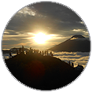
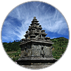
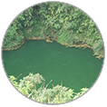
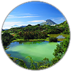

Bukit Sikunir
Bukit Sikunir terletak
di Desa Sembungan
kabupaten wonosobo
yang merupakan desa tertinggi
di Jawa Tengah. Bukit Sikunir
berada pada ketinggian
2.200 mdpl.

Candi Dieng
Candi adalah sebuah simbol
kepariwisataan di Dieng.
Dieng menjadi tempat yang sakral.
Di sini terdapat banyak
Candi Hindu yang tersebar
di berbagai lokasi.

Sumur Jalatunda
Sumur Jalatunda berlokasi
di Desa Pekasiran, Kecamatan
Bantur, Kabupaten Banjarnegara,
kurang lebih sekitar 12 km
di sebelah barat lokasi
utama wisata Dieng.

Telaga Warna
Telaga warna adalah salah
satu landmark dari wisata
Dieng Wonosobo. Telaga
ini memiliki warna yang
berbeda-beda.
Telaga Warna ini memiliki
legenda tersendiri.